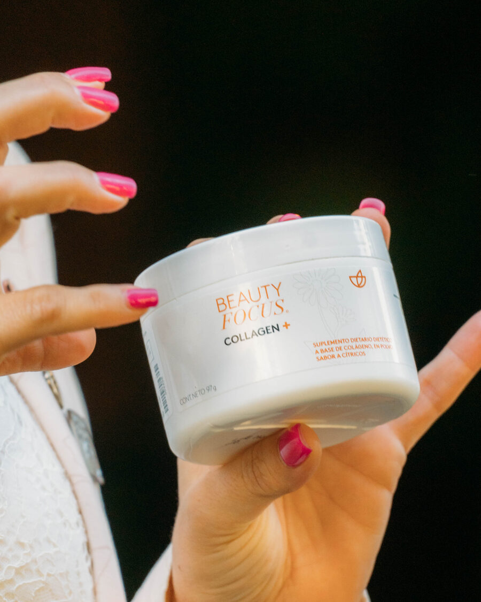
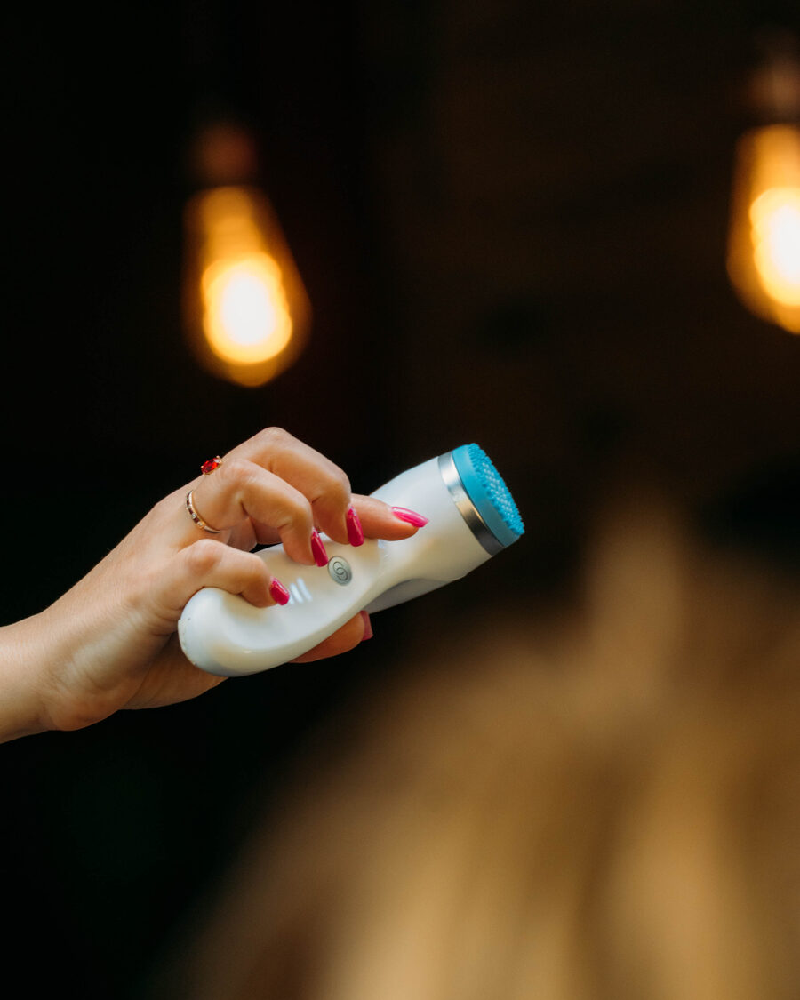
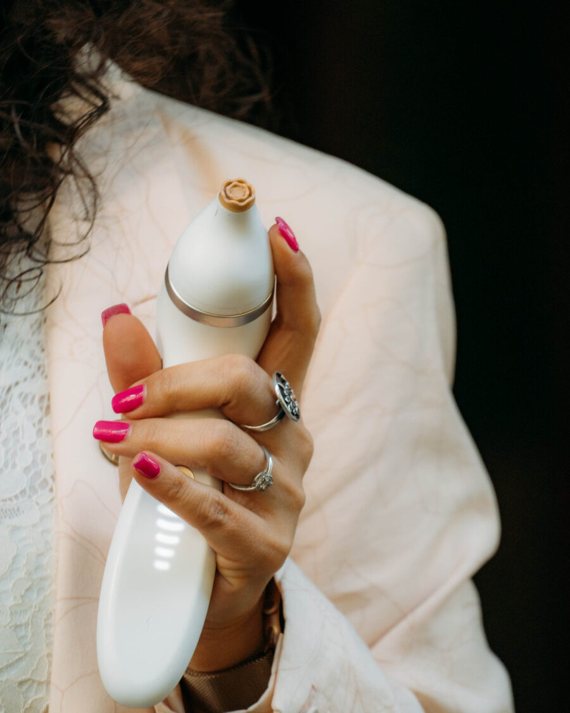

Durante años, la industria cosmética nos vendió cremas que "hidratan la superficie". Nu Skin cambió las reglas del juego: con la tecnología ageLOC, ya no se trata de disimular las arrugas — se trata de trabajar a nivel celular para que tu piel envejezca mejor.

¿Qué es la tecnología ageLOC?
ageLOC es la tecnología exclusiva de Nu Skin desarrollada tras años de investigación en genética del envejecimiento. En términos simples: los científicos identificaron grupos de genes específicos relacionados con cómo envejecemos (los llamaron YouthGenes) y diseñaron productos que actúan sobre su expresión.
Esta tecnología no es marketing: está respaldada por publicaciones en revistas científicas revisadas por pares, patentes registradas internacionalmente y una inversión sostenida en I+D que pocos laboratorios cosméticos igualan.
El objetivo no es detener el tiempo — eso no existe. El objetivo es que tu piel envejezca con firmeza, hidratación y luminosidad.
Los 3 pilares del cuidado epigenético
1. Protección celular
El estrés oxidativo — causado por la contaminación, la radiación UV, el estrés emocional y la mala alimentación — es uno de los principales responsables del envejecimiento prematuro. Los productos ageLOC actúan como un escudo para tus células, neutralizando radicales libres y protegiendo la integridad del ADN celular.
2. Renovación activa
Con el paso del tiempo, la producción natural de colágeno y elastina disminuye. Los sueros y dispositivos ageLOC contienen ingredientes activos que estimulan la síntesis natural de estas proteínas estructurales. La piel recupera densidad, elasticidad y una textura visiblemente más lisa.
3. Resultados medibles
A diferencia de la mayoría de las líneas cosméticas, ageLOC publica sus estudios de eficacia. Los resultados se pueden medir: reducción de arrugas, mejora en la firmeza, aumento de la luminosidad, hidratación sostenida. No son promesas: son datos.
La diferencia epigenética
Un cosmético tradicional actúa sobre la superficie. Un producto epigenético actúa sobre cómo tus células funcionan. La diferencia es la misma que hay entre pintar una pared vieja y reforzar sus cimientos.
Beauty Focus Collagen+: belleza desde adentro

Uno de los productos estrella del portafolio: un suplemento dietario a base de colágeno hidrolizado, en polvo, sabor cítricos, formulado para trabajar la salud de tu piel desde adentro.
El colágeno es la proteína estructural más abundante de nuestra piel. Su producción natural disminuye aproximadamente 1% por año a partir de los 25 años. Este suplemento provee los aminoácidos precursores para que el cuerpo pueda producir su propio colágeno de manera más eficiente.
La ciencia epigenética nos enseña que lo que consumimos impacta directamente en cómo se expresan nuestros genes — y eso se nota en la piel. Beauty Focus Collagen+ es un ejemplo concreto de cómo trabajar la belleza integralmente: por dentro y por fuera.
Dispositivos domiciliarios con tecnología profesional

Nu Skin fue pionera en llevar tecnología profesional al uso doméstico. Los dispositivos LumiSpa y ageLOC combinan movimientos micro-vibratorios patentados con formulaciones específicas que potencian:
- Limpieza profunda sin agredir la barrera cutánea.
- Microcirculación mejorada, que favorece la oxigenación celular.
- Penetración de activos hasta las capas donde realmente son útiles.
- Estimulación mecánica que ayuda a la renovación natural de la piel.
El resultado: rutinas de skincare de nivel profesional que hacés en tu casa, en pocos minutos, con resultados visibles en semanas.
¿Cómo empezar?
El cuidado epigenético de la piel no es "un producto mágico": es una rutina consistente adaptada a tus necesidades específicas. En Piu Bella Spa te ayudamos a:
- Identificar el tipo y las necesidades reales de tu piel.
- Armar una rutina simple, sostenible y efectiva.
- Elegir los productos que realmente vas a usar (y no una batería de frascos que juntan polvo).
- Medir resultados objetivamente a lo largo del tiempo.
Sin presión de venta, sin discursos comerciales. Solo información, asesoramiento y productos que la ciencia respalda.




¿Querés una rutina a tu medida?
Contame sobre tu piel y te armamos una rutina personalizada con productos que realmente funcionen para vos.
Pedir asesoramiento por WhatsApp →